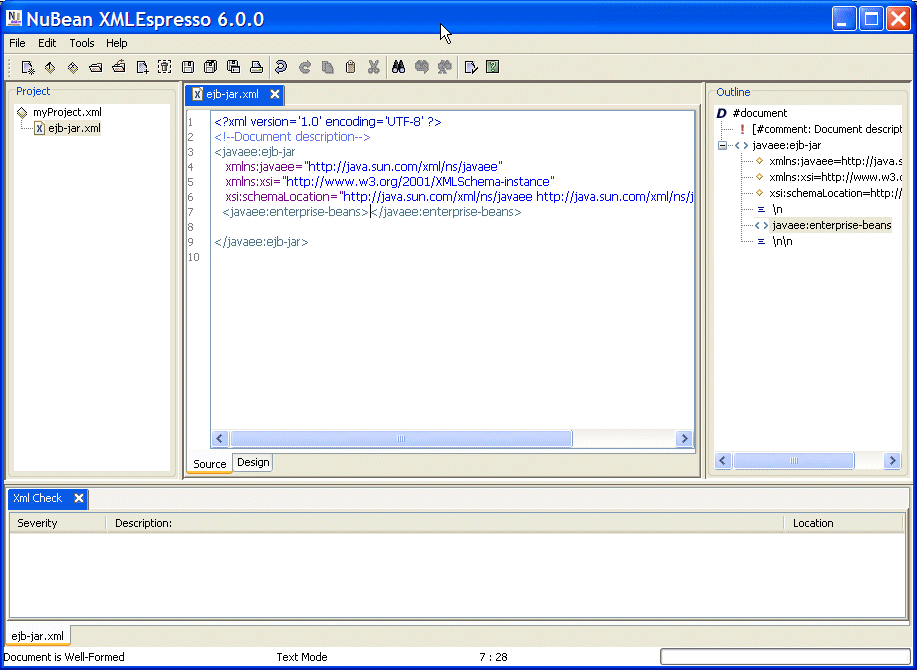
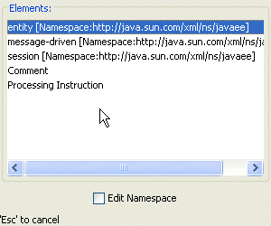
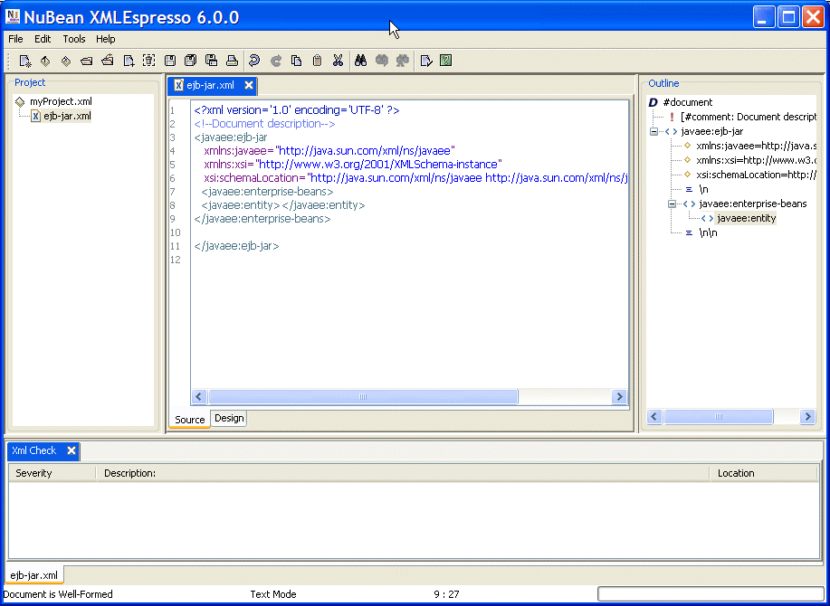
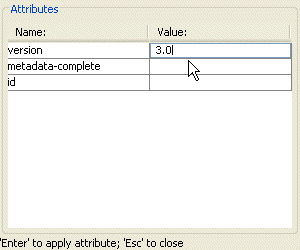
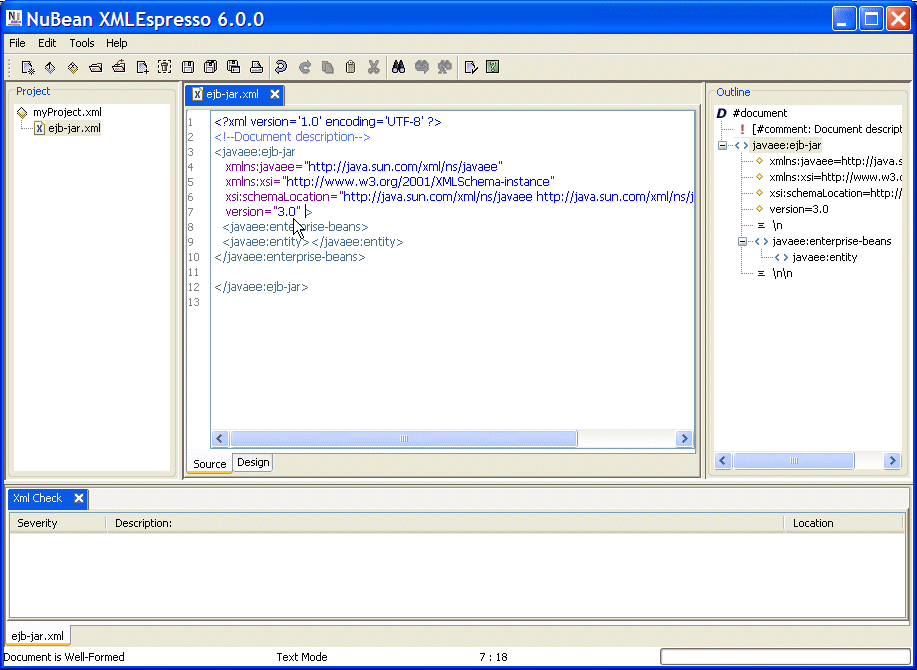
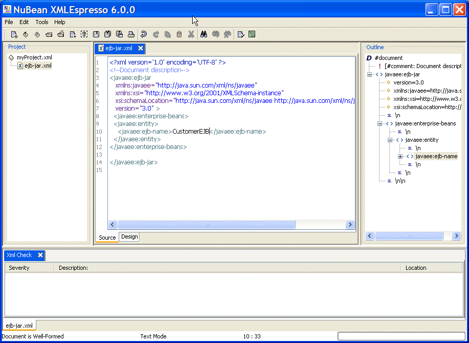
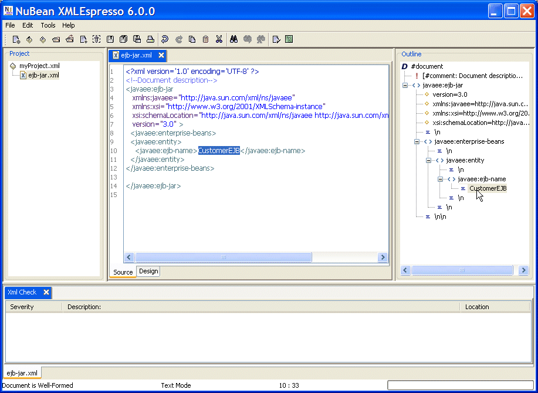
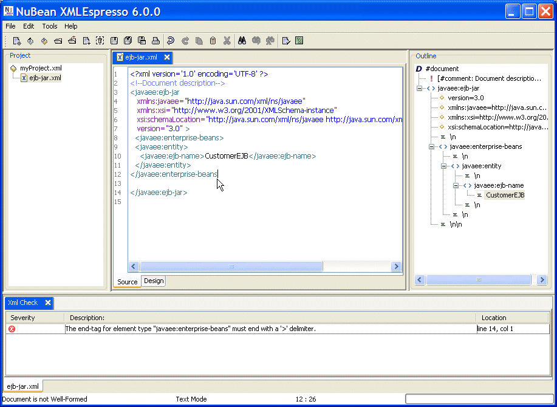
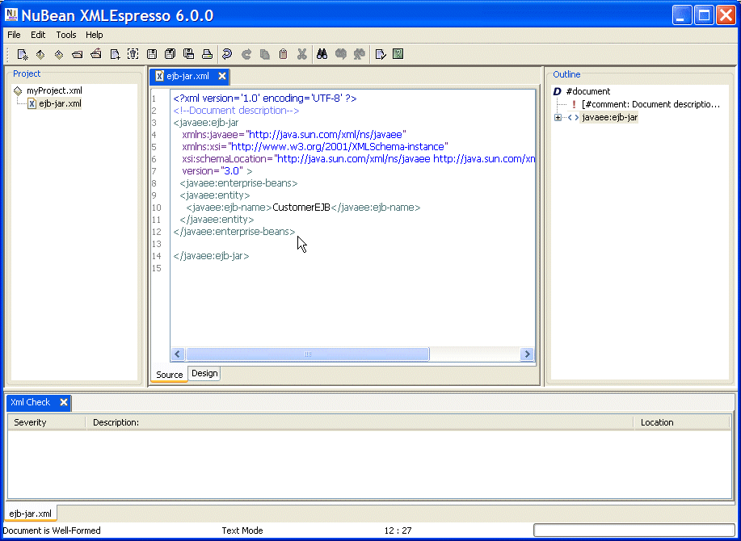

4.1 Adding an Element Tag to a Document
To add a element tag to a document position the cursor to the left of the closing tag of the element to which a sub-element tag is to be added and select Ctrl+Space.For example, to add a sub-element to the 'enterprise-beans' element in a document of type JavaEE 5>Ejb 3.0, position the cursor to the left of the </enterprise-beans> tag and select Ctrl+Space.
|  |
A choice list of sub-elements gets displayed. To select an element double-click on the element. Select the Edit Namespace checkbox to add a Namespace to the element.
Specify a Namespace Prefix and Namespace URI and click on the OK button.
|  |
The selected element is added to the document.
|  |
A node corresponding to the selected element is added to the document Outline.
To add a attribute to a element tag position the cursor in the start tag of the element, after the opening '<' or before the closing '>', and press Ctrl+Space bar. For example press Ctrl+Space bar in the ejb-jar element in a document of type JavaEE 5>Ejb 3.0. An Attributes window opens with a choice list of element attributes. To add an attribute to an element specify an attribute value and click on Enter.
|  |
The attribute and attribute value get added to the element tag.
|  |
To add text to a text element position the cursor to the left of the closing tag of the element and add the text. For example add text to the 'ejb-name' element in a document of type JavaEE 5>Ejb 3.0.
|  |
Nodes corresponding to the added attribute and added text get added to the document outline.
|  |
XMLEspresso XML Editor provides code assist even if the document has errors. For example, if a '>' is not specified at the end of 'javaee:enterprise-beans' tag, select Ctrl+Space.
|  |
The '>' gets added and the error gets removed.
|  |